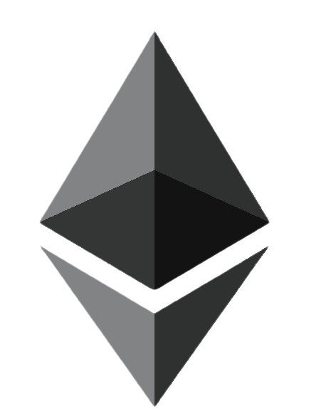

¡POR UN SISTEMA DE JUSTICIA QUE FUNCIONE!
En nuestro movimiento proponemos democratizar el sistema de justicia, conectándose con las necesidades de los ciudadanos, como instrumento al servicio de todos, creando las condiciones que aseguren el cambio, donde cada quien pueda producir, crear, vivir en plenitud, sin tantas trabas ni limitaciones en el devenir de sus vidas.

¿SIENTES QUE EL SISTEMA DE JUSTICIA RESPONDE A TUS NECESIDADES, SOLUCIONA TUS PROBLEMAS?
Consideramos a la justicia como unos de los pilares del orden social determinante del logro de la prosperidad, de la emancipación de las personas, de los avances en los demás sectores de la colectividad, aportando la libertad en términos tangibles la capacidad de elección, sin el dominio de grupos de poder y libre de la influencia (manipulación) de los medios de comunicación.
Nuestra propuesta va más allá de una lucha por derechos civiles en contra de un sistema corrupto, mafioso que ha hecho metástasis, volviéndose hostil hacia los ciudadanos.
¡UN CAMINO CON NUEVAS DIMENSIONES!
Civis Causa recomienda un camino con nuevas dimensiones, asegurando una justicia que funcione para todos.
Objetivos y actividadesAportamos soluciones a las personas, influyendo en la transformación de sus comunidades, replicándose en la sociedad, en beneficio de las naciones donde implementemos el programa de democratización de Civís Causa.
VALORES
Promovemos un sistema jurídico eficiente, efectivo, enmarcado dentro de la democratización de la justicia, que garantice un servicio ágil, asequible, equitativo, fácil, simplificado, expedito, independiente, humanista al servicio de las personas, no a favor de grupos de poder.
Para lograr estos resultados, hemos creado un programa con estándares que garanticen procesos transparentes que permitan la consecución de los objetivos planteados para el empoderamiento ciudadano.
Una justicia tortuosa, ilusoria, no funciona, divorciada de los intereses de las personas, sin garantías, en otras palabras la justicia es impracticable.
¿Necesitamos democratizar la justicia?
La justicia no está disponible para todos, ejercerla resulta costosa respecto al resultado esperado, exponiéndonos a procesos burocráticos, demoledores, quedando indefensos, desamparados en un laberinto interminable de pérdida de tiempo, dependiendo las acciones de tu vida de los grupos de poder como de las manipulaciones de los medios de comunicación.
INCORPÓRATE
A LA ACCIÓN
Hemos de organizarnos, generar canales de comunicación para difundir nuevos estándares de justicia que trabajen para las personas, debemos integrar a un equipo de profesionales que ponga en marcha un despliegue de campañas efectivas, con la finalidad de obtener resultados palpables, medibles a la altura de los objetivos planteados.
Únete, participa y contribuye con nuestro proyecto, tu aporte es importante de cualquier forma que creas o puedas. Tu participación logrará trasformaciones significativas en la sociedad.
El cambio depende de ti
¡Haz que suceda!
ES EL MOMENTO DE ACTUAR
¿Quieres participar en un cambio de paradigma social y mejorar el sistema jurídico actual?
VOLUNTARIOS
Conoce cómo puedes aportar según tu tiempo e interés sin la necesidad de exponerte.
SIMPATIZANTES
Podrás interactuar y hacer propuestas en nuestros canales oficiales alternativos.
Alianzas y contribuciones
Participa con tu respaldo, con aportes de servicios o productos. La coraboración es participación.
REALIZA UNA DONACIÓN
Apóyanos para garantizar resultados con un equipo competente dedicado, los recursos necesarios y una gestión profesional en permanencia.
¡ÚNETE A LA CAMPAÑA!
¡Apúntate y sé protagonista de una
sociedad al servicio de los ciudadanos!
¿Estás cansado de una justicia viciada
e inaccesible que nos pisotea?
¿Quieres ayudar a poner orden?
OPCIÓN 1: REGISTRO
OPCIÓN 2: VIDEOLLAMADA
Sí, exploremos juntos la mejor forma
de participar o contribuir a este cambio.
Agenda una videollamada
de 15 minutos
Haz una transferencia bancaria:
Cuenta: CIVIS CAUSA
BIC/Swift: TRWIBEB1XXX
IBAN: BE03 9678 8853 1884
Dirección: Rue du Trône 100, 3rd floor
Brussels 1050 - Belgium
Regálanos criptos a esta billetera:
Binance ID:567825748 via USDT
 Metamask
Metamask
Aceptamos las siguientes cripto monedas:
-
 Ethereum (ETH)
- Dirección de la cartera:
0xEf1e4cBD118c92622aadf8b0605A5F8172A0e66D
- Dirección de la cartera:
OPCIÓN 1: REGISTRO
OPCIÓN 2: VIDEOLLAMADA
Sí, exploremos juntos la mejor forma
de participar o contribuir a este cambio.
Agenda una videollamada
de 15 minutos
¡Muchas gracias por tu apoyo!
-
Impacto y beneficios
+- Instauración de un sistema de justicia que trabaje para las personas.
- Liberación de un sistema opresor, instrumento de grupos de dominación.
- Un modelo de justicia con un enfoque humanista.
- El empoderamiento de las personas en la solución de sus necesidades y su autorrealización.
-
¿De dónde provienen los fondos?
+Los fondos provienen de la autogestión de asesorías del programa Civís Causa, asimismo a través de las contribuciones por donativos de personas naturales, jurídicas o instituciones aliadas al proyecto.
-
¿Para qué se utilizarán los fondos?
+Los fondos serán empleados en el desarrollo de las actividades de investigación de campo, documentación de casos, implementación del plan estratégico, el plan de comunicación (offline y digital) en función de los objetivos establecidos.
-
Estructura organizacional
+Civís Causa es una organización civil independiente, sin fines de lucro registrada bajo el número DK41840021. Somos un movimiento universal que promueve el empoderamiento de las personas prevaleciendo sobre el colectivismo, sin vinculación de compromisos partidistas, corporaciones tecnológicas (Big tech), medios de comunicación, grupos de poder no alineados con nuestros principios humanistas de pensamiento libre y crítico.
Compromiso por el cambio
Programa de Actividades - Nuestra propuesta
1er Pilar: La Democratización de la Justicia
CONFIDENCIALIDAD, RESGUARDO Y TRATAMIENTO DE LA INFORMACIÓN DE LOS CLIENTES
Los datos personales de los usuarios de nuestra página serán incorporados a un fichero.
Civis Causa (justicia.civiscausa.org) hará su mejor esfuerzo en mantener toda la información de sus clientes a buen resguardo. Se obliga a no divulgar a terceros, no vender ni hacer pública de ninguna manera cualquier información recibida de sus clientes y a utilizar dicha información única y exclusivamente a los efectos de poder realizar las operaciones pactadas con sus Clientes. Según la normativa legal vigente, cualquier Cliente puede solicitar a Civis Causa que sus datos sean modificados, corregidos o eliminados de su base de datos.
Los proveedores de servicios de pago, así como los sistemas de pago y prestadores de servicios tecnológicos relacionados a los que se transmitan los datos para llevar a cabo las transacciones realizadas al amparo del presente contrato pueden obligados por la legislación del Estado donde operen, o por Acuerdos concluidos por éste, a facilitar información sobre estas transacciones a las autoridades u organismos oficiales de otros países, situados tanto dentro como fuera de la Unión Europea, en el marco de la lucha contra la financiación del terrorismo y formas graves de delincuencia organizada y la prevención del blanqueo de capitales.
Si requiere más información o tiene preguntas acerca de nuestra política de privacidad, por favor envíelas escribiendo en nuestro formulario de contacto.
En justicia.civiscausa.org consideramos que la privacidad de nuestros visitantes es muy importante. Esta Política de Privacidad describe en detalle los tipos de informaciones personales que son recogidas, resguardadas y utilizadas por justicia.civiscausa.org
ARCHIVOS DE REGISTRO
Como muchos otros sitios web, justicia.civiscausa.org hace uso de archivos de registro. Dichos archivos simplemente guardan a los visitantes del sitio, lo que es un procedimiento estándar para las compañías de hosting y de análisis de servicios de hosting. La información comprendida en los archivos registro incluye dirección IP, tipo de navegador, proveedor de servicio de internet, marcado de fecha / hora, páginas de referencia / salida y el conteo de clicks. Esta información es utilizada para analizar tendencias, administrar el sitio web, rastrear navegación del usuario alrededor de la página web y reunir información demográfica. La dirección IP y otros datos no están enlazados a ninguna información que sea personalmente identificable, éstos datos podrán ser utilizados por el grupo de empresas pertenecientes a Civis Causa
COOKIES Y WEB BEACONS
justicia.civiscausa.org utiliza cookies para almacenar información acerca de las preferencias de los visitantes, para grabar información específica del usuario acerca de los sitios web que visita y para personalizar el contenido de nuestro sitio web basados en el tipo de navegador u otras informaciones que el usuario envía por ese medio.
NUESTROS ALIADOS PUBLICITARIOS
Algunos de nuestros aliados publicitarios pueden utilizar cookies y web beacons en nuestro sitio. Nuestros aliados son:
Adroll
Google Adworks
EngageBay
Si bien cada uno de estos aliados publicitarios poseen sus propias Políticas de Privacidad, un recurso actualizado de dicha información puede consultarla aquí: Políticas de privacidad.
Ud. puede consultar este listado para ubicar las políticas de privacidad de cada uno de nuestros aliados publicitarios.
Estos servidores o redes utilizan en sus respectivas publicidades links que aparecen en justicia.civiscausa.org y que son enviados directamente a su navegador. Estos reciben automáticamente su dirección IP cuando esto ocurre. Otras tecnologías (como cookies, JavaScript o Web Beacons) pueden también ser utilizadas por nuestros aliados publicitarios para medir la efectividad de las campañas y/o personalizar el contenido que Ud. ve en el sitio web.
Civis Causa o justicia.civiscausa.org no tiene acceso ni control sobre estas cookies que son usadas por nuestros aliados publicitarios.
Si desea desactivar estas cookies, Ud. Puede hacerlo modificando las opciones personales de su navegador. Mayor información sobre el manejo de cookies de su navegador puede conseguirse en los Sitios Web de dicho navegador.
Esta política de privacidad aplica sólo para nuestra actividad en línea y es válida para visitantes de nuestro sitio web y se refiere a la información compartida y recogida allí. Esta política no es válida para la información obtenida por otros canales que no sean este website.
CONSENTIMIENTO
Al utilizar nuestro sitio web, Ud. está de acuerdo con los términos de esta política de privacidad.